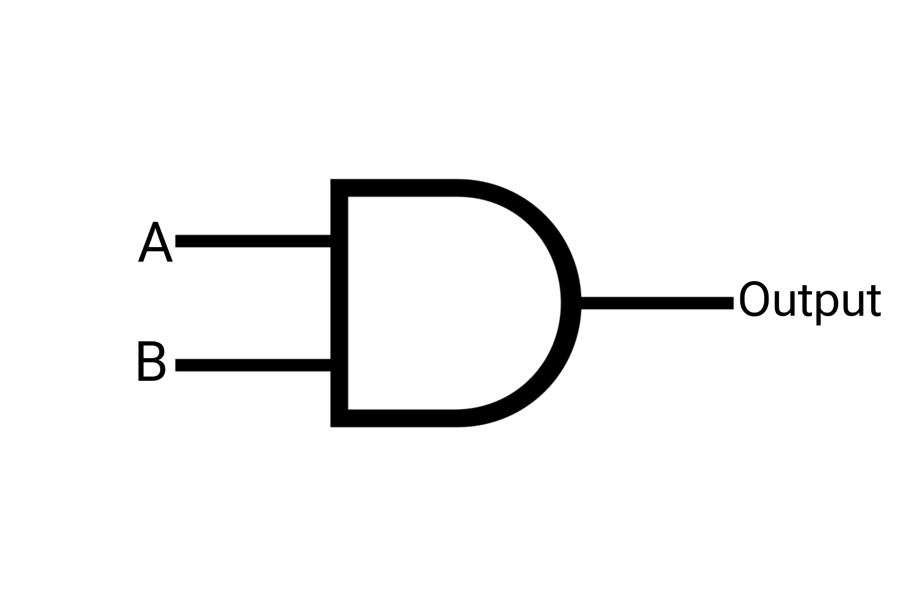

 Off
Off
Truth Table Of AND Gate
| A |
B |
Output |
| 0 |
0 |
0 |
| 1 |
0 |
0 |
| 0 |
1 |
0 |
| 1 |
1 |
1 |
Algorithm
The logical AND gate is a fundamental component in digital logic circuits. It takes two binary
inputs, usually labeled as A and B, and produces an output based on the logical AND operation. The
output is HIGH (1) only when both inputs are HIGH (1); otherwise, the output is LOW (0).
| Steps |
Description |
| Step 1 |
Start. |
| Step 2 |
Accept two binary inputs, A and B. |
| Step 3 |
Check if both inputs A and B are HIGH (1). |
| Step 4 |
If yes, set the output to HIGH (1). |
| Step 5 |
If no, set the output to LOW (0) |
| Step 6 |
Output the result. |
| Step 7 |
End. |